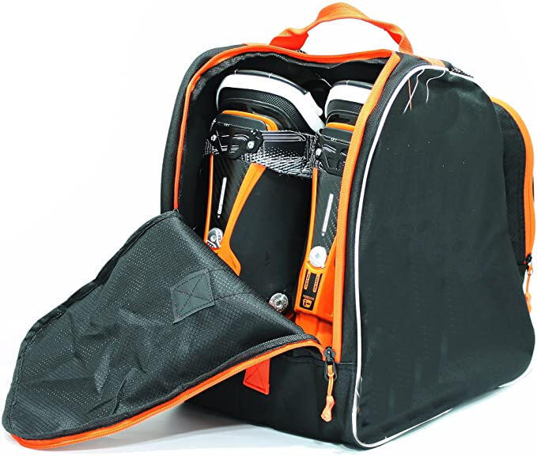

Uw eigen skischoenen laten aanpassen
U komt voor een assessment langs met uw eigen skischoenen. Tijdens dit bezoek bespreken wij uw klachten en doen wij onderzoek naar o.a. voetstand, voettype etc. Hierna kunnen wij uw skischoenen aanpassen. Ook kunnen wij eventueel reparaties uitvoeren of goede buitenschoenen voorzien van nieuwe binnenschoenen.
Mijn skischoenen aanpassen